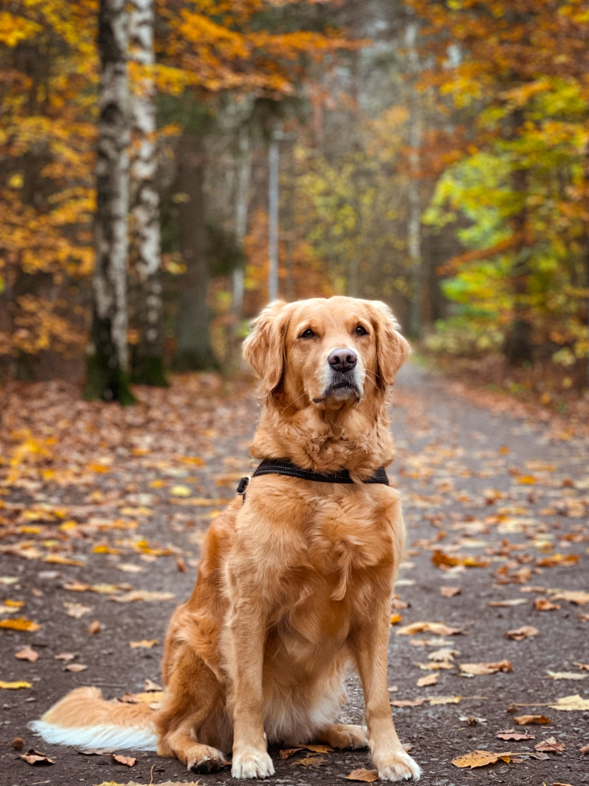
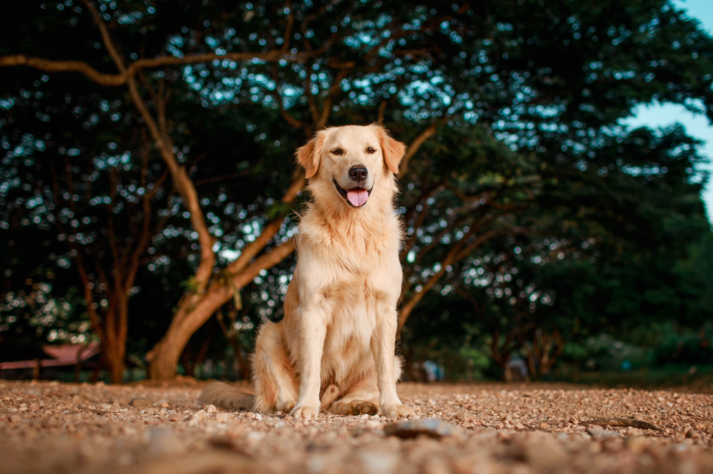
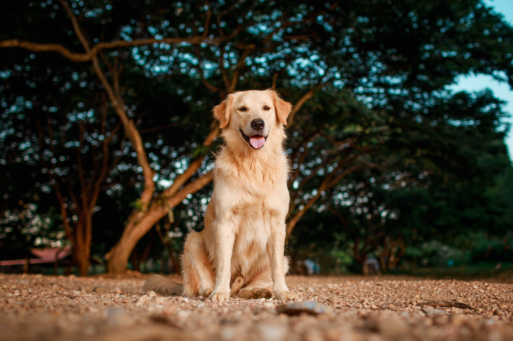

Nova
Introducing Nova: Your New Found Cuddle Buddy!
Meet Nova, the heartwarming golden retriever who's ready to be your loyal companion! Nova, at 4 years old, embodies the true spirit of devotion. He's a highly intelligent canine who finds his greatest joy when he's by your side, willing to do anything to make you happy. While he adores outdoor adventures, Nova's inner couch potato shines through most of the time; he just wants to be close to his beloved person.
Nova has an incredible ability to form deep connections, and when he finds his person, he's unwavering in his loyalty. However, his friendly and adaptable nature means he gets along well with everyone, including kids and other animals. Nova's heart is big enough to share his love with all, but he's hoping to find that special someone who will cherish his unwavering companionship.
If you're seeking a smart, loving, and adaptable furry friend who will be your ultimate couch buddy and adventure companion, Nova is the perfect match. Don't miss the chance to bring this golden retriever into your life, where his boundless affection and loyalty will brighten your days. Adopt Nova today and experience the love and devotion only a golden retriever can provide.
 
